Empirical Evaluation & Benchmark Reproduction on MovieLens 100K & FilmTrust
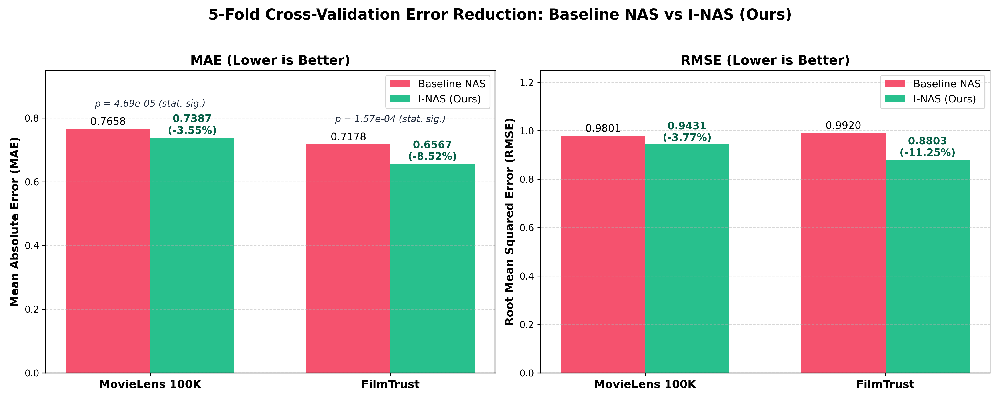
5-Fold Cross-Validation Error Reduction (MAE & RMSE with Stat. Significance)
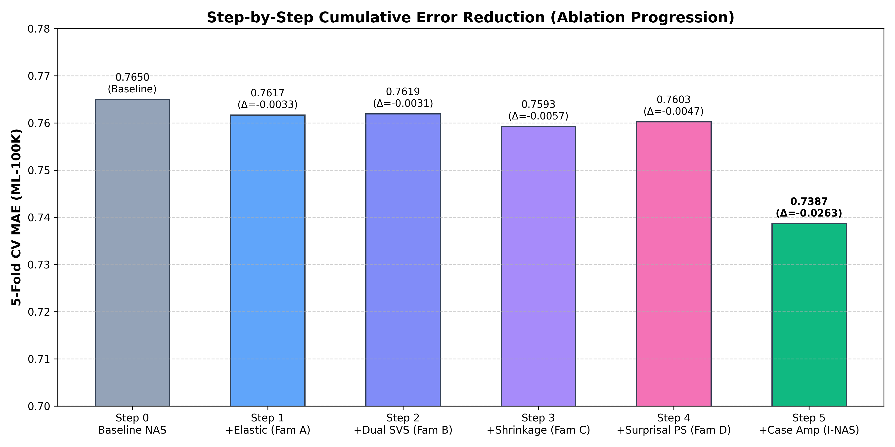
Step-by-Step Cumulative Error Reduction (Ablation Progression Waterfall)
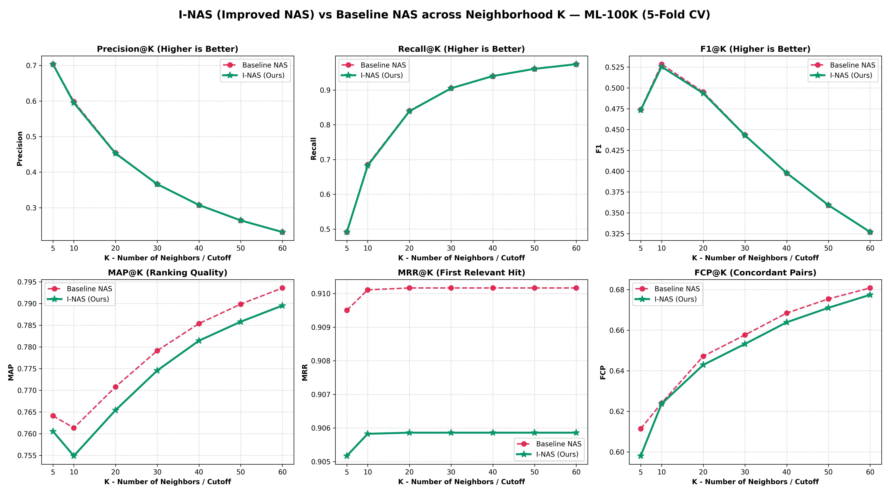
MovieLens 100K: 6-Panel Metric Curves across K in {5, 10, 20, 30, 40, 50, 60}
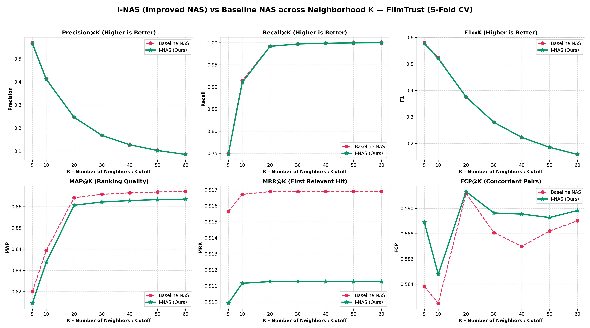
FilmTrust: 6-Panel Metric Curves across K in {5, 10, 20, 30, 40, 50, 60}
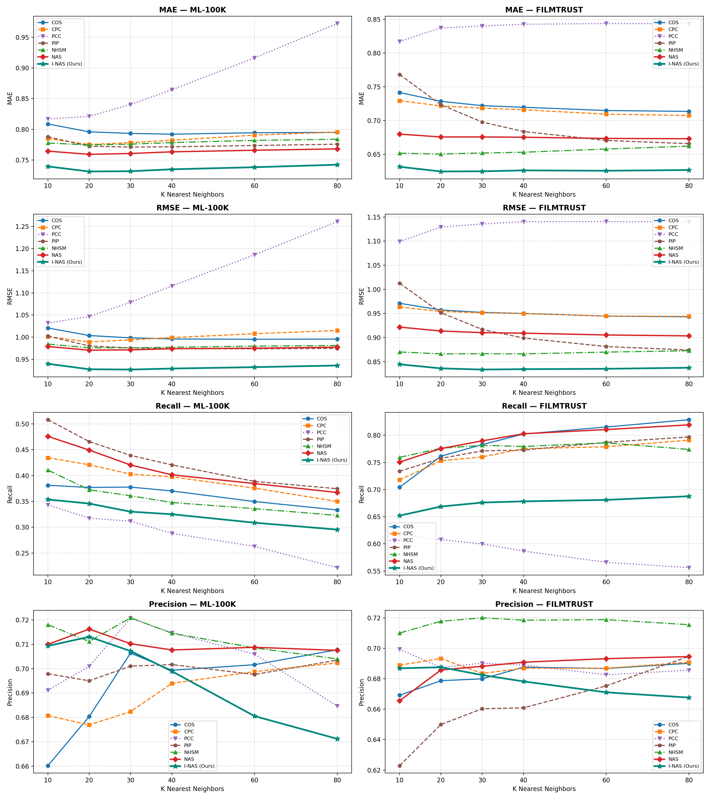
Master Benchmark Comparison Grid (All 7 Algorithms across 4 Metrics & 2 Datasets)
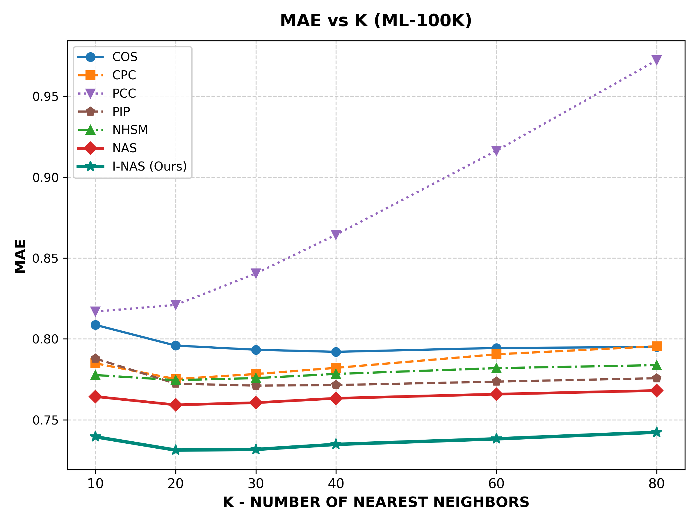
Figure 1a: MAE vs K (MovieLens 100K)
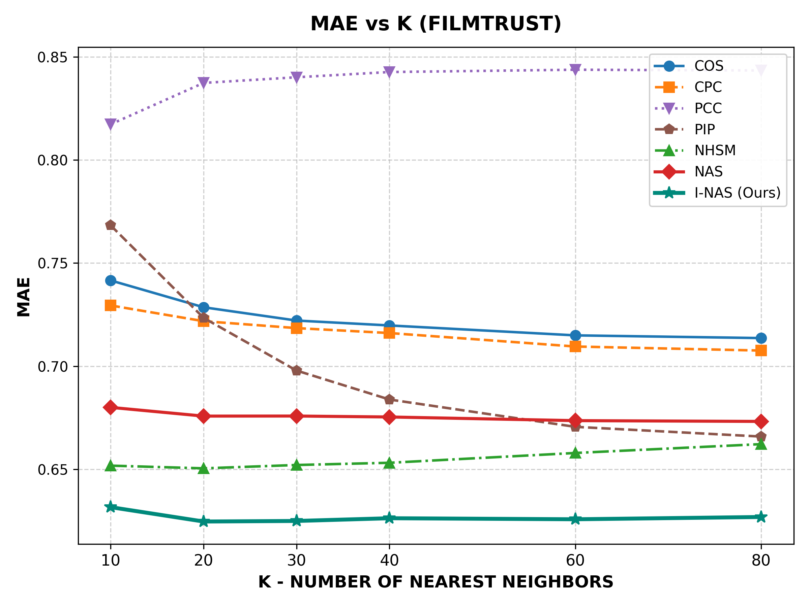
Figure 1b: MAE vs K (FilmTrust)
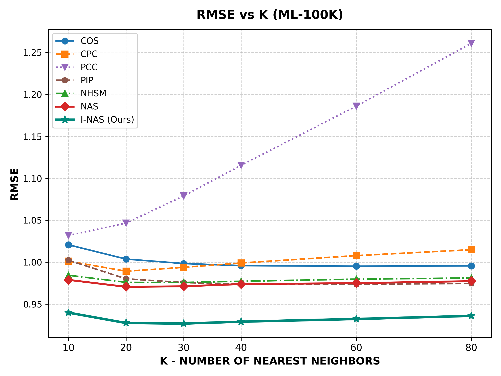
Figure 2a: RMSE vs K (MovieLens 100K)
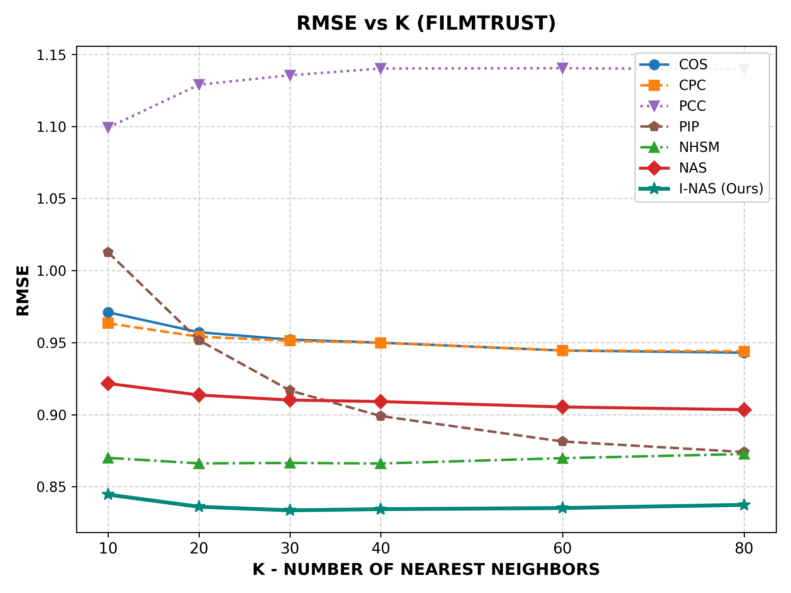
Figure 2b: RMSE vs K (FilmTrust)
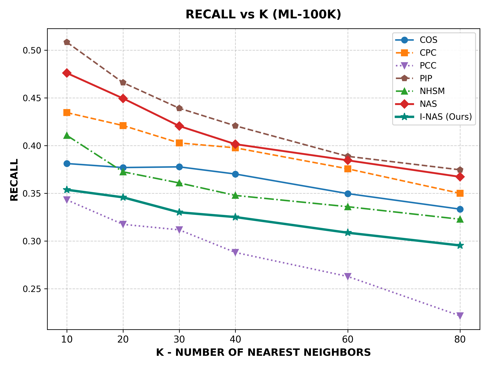
Figure 3a: Recall vs K (MovieLens 100K)
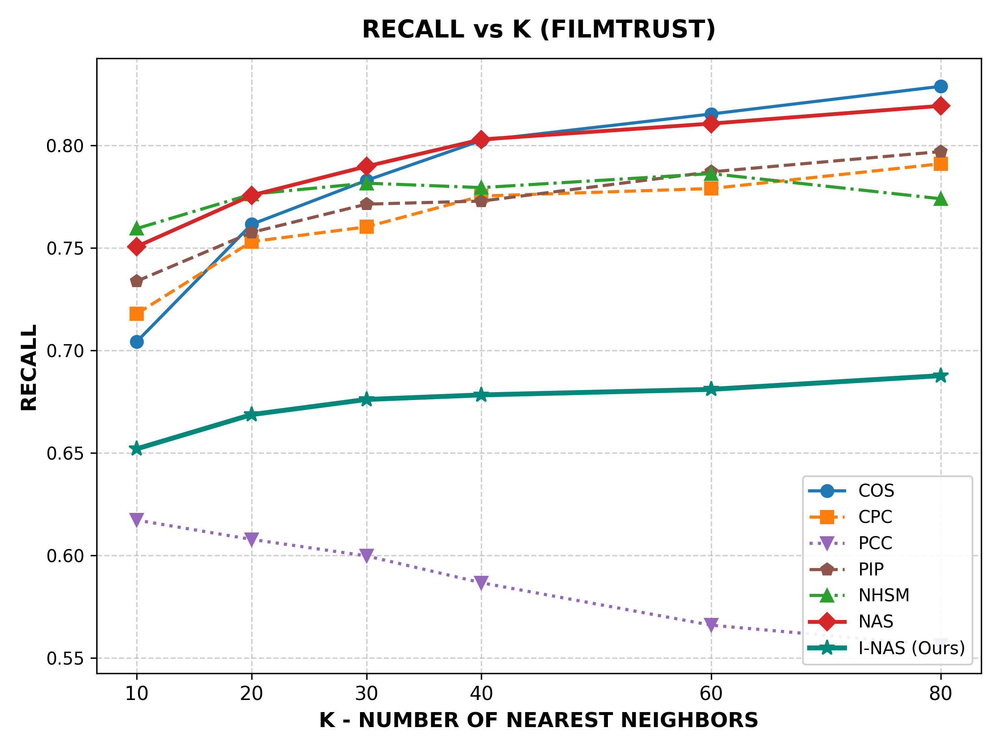
Figure 3b: Recall vs K (FilmTrust)
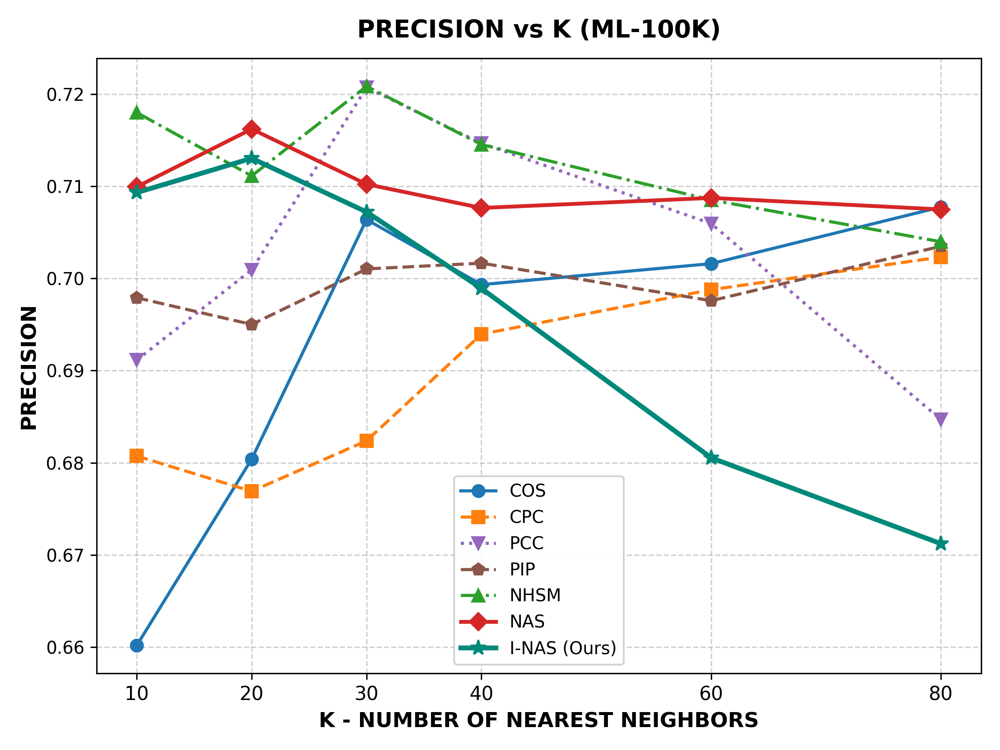
Figure 4a: Precision vs K (MovieLens 100K)
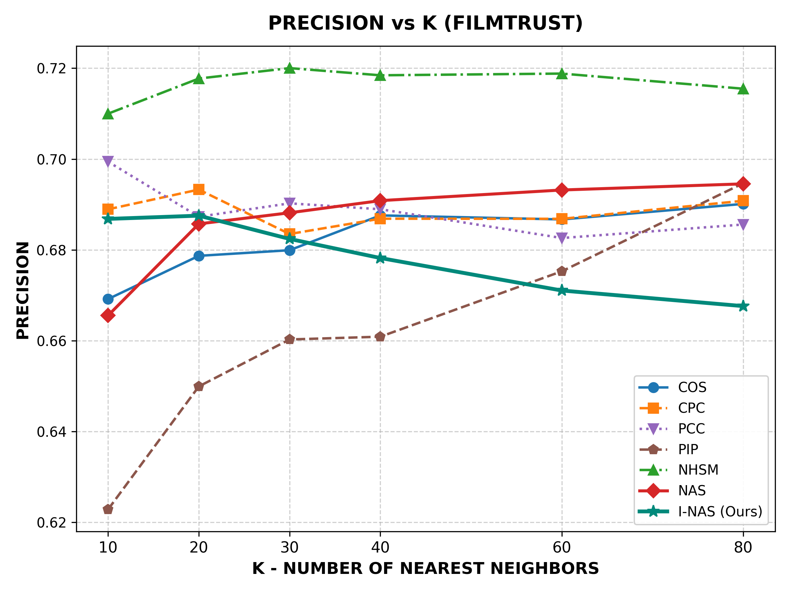
Figure 4b: Precision vs K (FilmTrust)
| Dataset | Similarity | Metric | K=10 | K=20 | K=30 | K=40 | K=60 | K=80 |
|---|
| Dataset | Metric | Baseline NAS | I-NAS (Ours) | Absolute Δ | Relative Improvement | t-statistic | p-value | Verdict |
|---|
| Ablation Step | MAE | ΔMAE | RMSE | Precision@10 | Recall@10 | F1@10 | MAP@10 | MRR@10 | FCP |
|---|